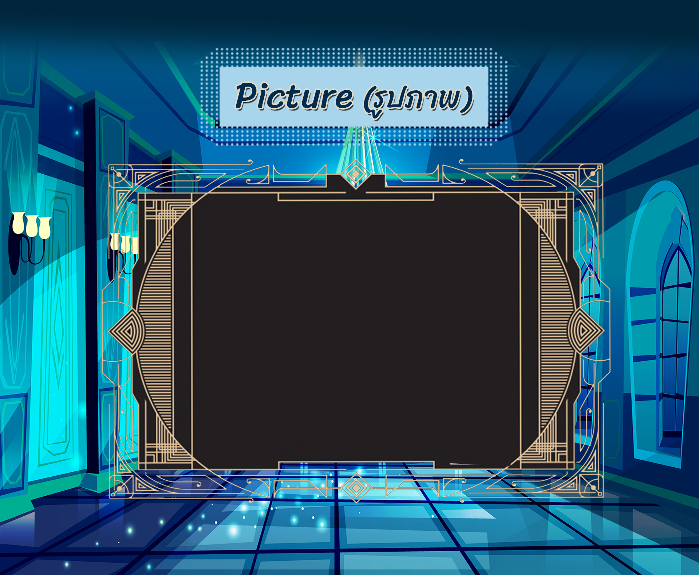

Loki เป็นเทพเกเรในเทพปกรณัมนอร์ส
โลกิมีความขี้เล่นและซุกซน
ในช่วงแรกนั้นโลกิได้ช่วยเหลือเหล่าเทพแห่งแอสการ์ดในการต่อสู้กับเหล่ายักษ์
แต่เมื่อเวลาผ่านไป ความซุกซนของโลกิก็ยิ่งกลายเป็นความโหดร้ายยิ่งขึ้น เทพโลกิมีบุตร 3 ตน คือ
หมาป่าเฟนริล์ งูยักษ์มิดกาดโซรุม และเฮล เทวีแห่งอาณาจักรคนตาย ในวันแร็กนาร็อก วันสงครามสิ้นโลก
บุตรทั้ง 3
ของโลกิจะมีส่วนร่วมต่อสู้ในสงครามด้วย โลกิยังเป็นผู้ให้กำเนิดม้าสเลปนิร์ของโอดิน
โลกิ เป็นผู้สังหารบัลเดอร์ เทพแห่งความสุข
โดยใช้กิ่งของต้นมิสเซิลโท
ซึ่งเป็นสิ่งเดียวที่ไม่เคยสาบานว่าจะไม่ทำร้ายบัลเดอร์
ทำเป็นลูกดอกแล้วหลอกให้เทพฮอดผู้ตาบอดขว้างใส่บัลเดอร์ และเมื่อเทพเฮลมอดได้ไปตกลงกับเฮล
ซึ่งจะยอมให้บัลเดอร์กลับจากยมโลกถ้าทุกชีวิตบนโลกร่ำไห้แก่บัลเดอร์นั้น นางยักษิณี ทอค
ปฏิเสธที่จะร่ำไห้ตามคำขอร้องของแอนซัส ผู้ส่งสาร ซึ่งเชื่อว่าทอคนั้นก็คือโลกิปลอมตัวมานั่นเอง
ซึ่งเหตุการนี้เป็นจุดเริ่มต้นที่ทำให้โลกิเป็นศัตรูกับเหล่าเทพแห่งแอสการ์ดและถูกจับล่ามโซ่ไว้จนถึงวันแร็กนาร็อก
สรุปฉบับย่อ!!
►ตามตำนานเทพเจ้านอร์ส◄
• เป็นลูกของยักษ์ไฟ มีผมสีแดง หน้าตาดี
• เป็นลูกพี่ลูกน้องห่างๆ ของโอดิน ต่อมาสาบานเป็นพี่น้องกับโอดินและได้เลื่อนขั้นเป็นเทพแอสการ์ด
• มีนิสัยชอบแกล้ง ชอบเล่นแผลงๆ เจ้าเล่ห์ เป็นตัวป่วนและชอบสร้างปัญหา
• มีเมีย2คนคือซิกกิน (Sigyn) และแองเกอร์โบดา (Angrboda)
• เป็นพ่อของเฮล เฟนรีร์และยอร์มุนกานดร์
• เป็นแม่ของสเลปนีร์
• มีลูกอีก 2 คนคือ นาวี (Narvi) กับวาลี (Vali)
• สามารถแปลงร่างได้
• มีบทบาทสำคัญในการทำอาวุธและของวิเศษของเทพหลายๆองค์
• เคยขโมยสร้อยของเฟรย่า/โกนผมเทพีซิฟ
• เป็นคนยืมมือเทพโฮเดอร์ฆ่าบัลเดอร์โดยใช้หอกมิซเซิลโท
• ถูกจับคุมขังในถ้ำแล้วให้พิษงูหยดใส่หน้า
• เมื่อถึงวันแร็คนาร็อคจะหลุดจากที่คุมขังแล้วนำทัพยักษ์เข้าสู้กับเหล่าเทพ